Learning Objectives
After completing this lesson, you’ll be able to:
- Use multiple instances of a custom transformer.
- Make a custom transformer generic for use anywhere.
- Rename input and output ports in a custom transformer.
Resources
- Starting workspace
- C:\FMEData\Workspaces\AdvancedDataTransformation\control-data-flow-using-custom-transformer-ports.fmw
- Complete workspace
- C:\FMEData\Workspaces\AdvancedDataTransformation\control-data-flow-using-custom-transformer-ports-complete.fmw
- VancouverNeighborhoods.kml
- C:\FMEData\Data\Boundaries\VancouverNeighborhoods.kml
Like a normal FME transformer, a custom transformer has several input and output ports:
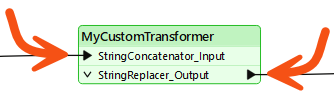
These input and output ports are defined by input/output objects in the custom transformer definition itself:
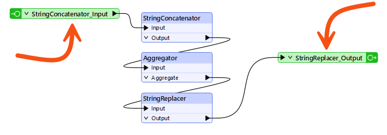
Renaming Ports
You can rename these input/output objects. These changes will appear when you view the custom transformer on the canvas. You can double-click the object, choose Rename from the context menu, or press F2 to rename the object.
For example, here, the user pressed F2 and renamed the input port from StringConcatenator_Input to simply Input:
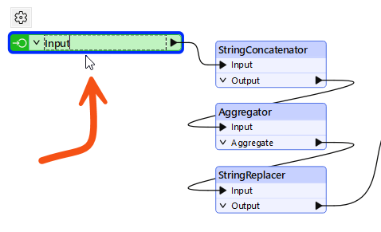
Renaming the input and output ports helps make the custom transformer's intentions more explicit; for instance, it helps the user understand what data type is required as input.
For example, after editing, the transformer might look like this:
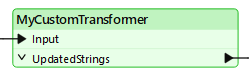

Here, the user renamed the input port to Input. Renaming it to "Strings," "Lines," or "Raster" (for example) would help guide other transformer users as to what data is required.
However, they renamed the output port to illustrate the emerging data type.
Adding or Removing Ports
Besides renaming ports, adding new ports to a custom transformer is possible.
To do so, select Insert Transformer Input (or Output) from either the menubar or the canvas context (right-click) menu:
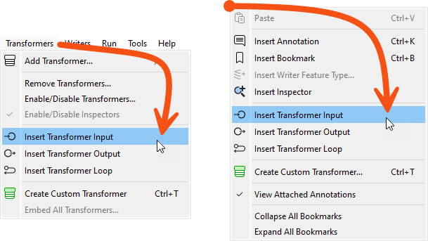
For example, here, a user has ports to handle two streams of input data and two streams of output (one port for the required output, another that handles rejected records:
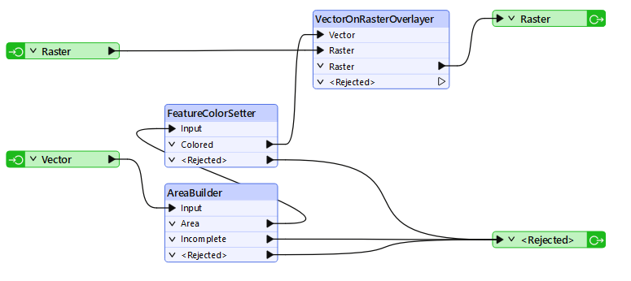
This means that each instance of the custom transformer has two input and two output ports:
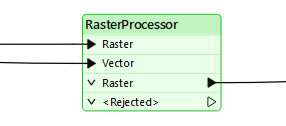
Exercise

In the last exercise, Sven turned a colleague’s population density workspace into a custom transformer called DensityEvaluator. His workspace reads Vancouver neighborhood boundary data and writes population density values for 2001 and 2011. Sven wants to use that one custom transformer for both years and make its output naming generic, so any project can reuse it.
In this exercise, you will:
- Duplicate a custom transformer and run two instances in parallel.
- Edit the custom transformer definition so both instances output a generic attribute name.
- Rename the custom transformer's input and output ports.
1) Open Starting Workspace
- Start FME Workbench (2026.2 or later).
- Open your starting workspace at C:\FMEData\Workspaces\AdvancedDataTransformation\control-data-flow-using-custom-transformer-ports.fmw.
The workspace started with two ExpressionEvaluators and now has one ExpressionEvaluator and one custom transformer. You will replace that remaining ExpressionEvaluator with a second instance of the DensityEvaluator.
- On the canvas, select ExpressionEvaluator_2011 and press Delete.
- Select the DensityEvaluator and press Ctrl+D, or right-click and choose Duplicate.
- Duplicating has the same effect as placing a new instance, but it is quicker. Quick Add and the Transformer Gallery are equally valid ways to add another instance.
- Connect the second DensityEvaluator into the workflow in parallel, not in series.
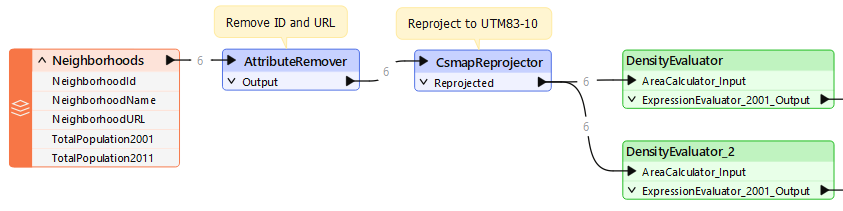
The second instance still points at the 2001 population attribute it inherited from the first. Changing it to the 2011 attribute is what makes the two instances calculate different years.
- Open the DensityEvaluator_2 parameters.
- Set the population parameter to TotalPopulation2011.
- The first instance keeps TotalPopulation2001.
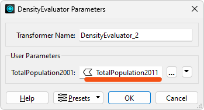
4) Run the Workspace
This run confirms whether both instances process the data correctly. It also surfaces a naming problem that you will fix in the next step.
- Run the workspace.
- Inspect the output.
- The density values differ between the two instances, which confirms each one processed a different year.
- Both instances write their result to an attribute called
PopulationDensity2001, regardless of the data being processed. Making that name generic is the next improvement.
Editing the definition changes every instance at once, which is the main payoff of building a custom transformer. Renaming the transformer and its result attribute drops the hard-coded 2001 from both instances.
- Click the DensityEvaluator tab.
- Open the ExpressionEvaluator_2001 parameters and update the following:
- Transformer Name: ExpressionEvaluator
- The transformer now processes more than just 2001 data.
- Result: DensityResult
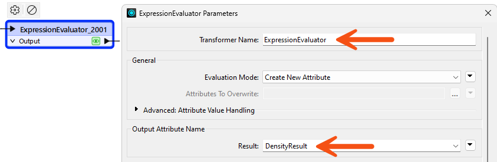
- Rerun the workspace, starting from at least the custom transformer.
- Both instances now output the
DensityResult attribute, so one edit fixed both of them.
6) Rename Ports
The port names still carry the AreaCalculator prefix from the transformers you selected when you built the definition. Clear port names tell anyone using the DensityEvaluator what kind of data each port expects.
- In the DensityEvaluator tab, click the cogwheel icon on the input port object, currently labeled AreaCalculator_Input.
- Change Transformer Input Name to Input.
- Click the cogwheel icon on the output port object.
- Change Transformer Output Name to Output.
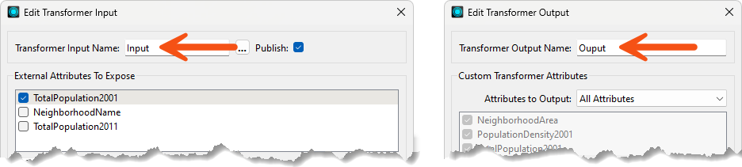
- Click the Main tab.
- The renamed ports appear on both DensityEvaluator instances.
- Resize the transformers to fit their new names.
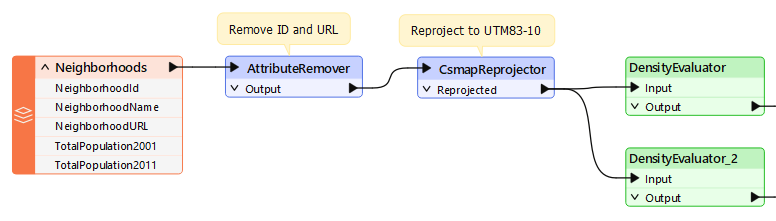
7) Save and Run the Workspace
Both instances now share one generic output attribute, so the only difference between them should be the density values they calculate. That is the payoff of editing the definition once instead of configuring each instance separately.
- Save the workspace.
- Run the workspace.
- In the output, compare the results from both DensityEvaluator instances.
- Observe that the density values differ between the two instances, because each one processes a different year.
- Observe that both instances write to the same
DensityResult attribute, regardless of the year they process.
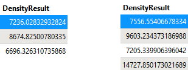